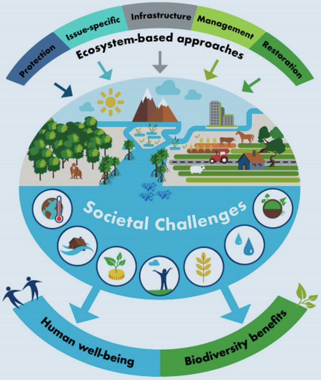
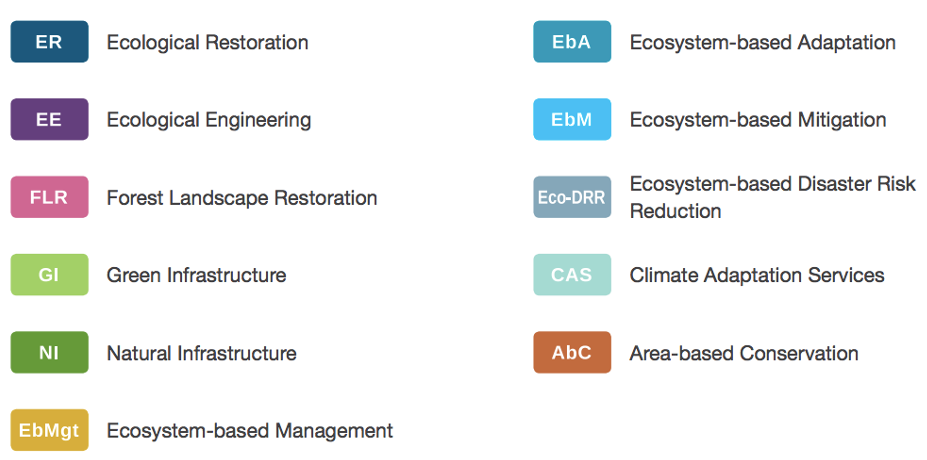
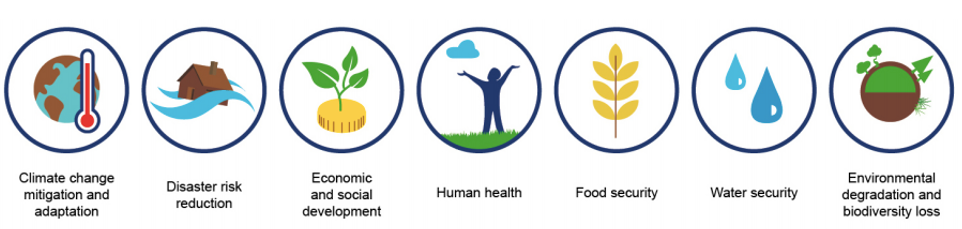
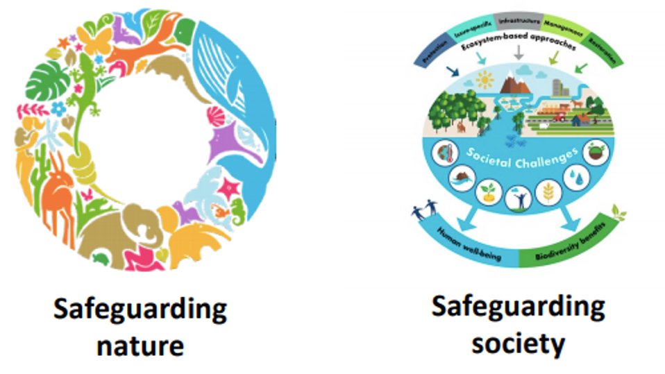
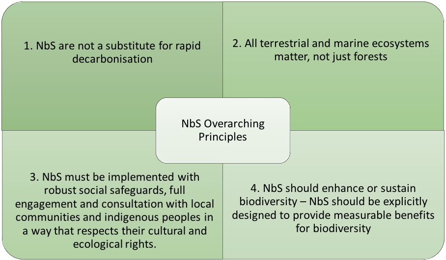
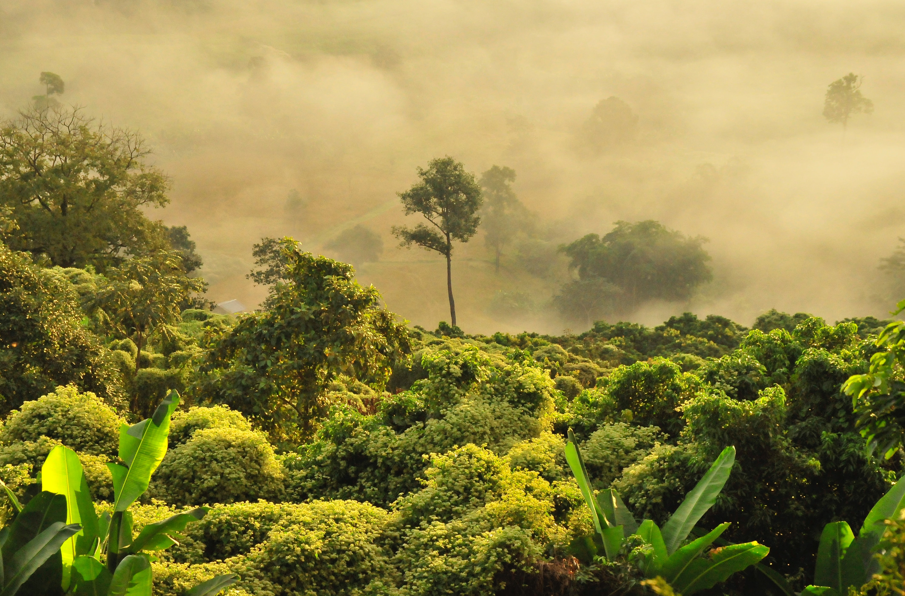
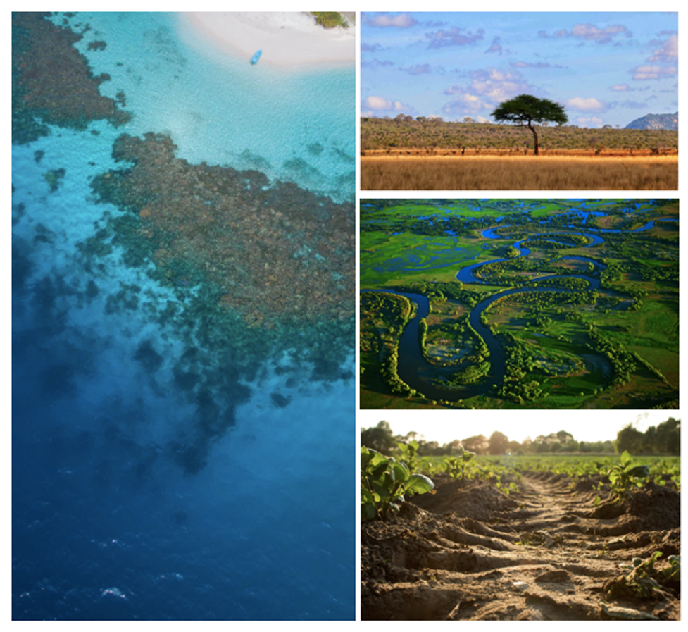

This mini-lecture will provide an introduction to the concept of nature-based solutions (NbS) and consider the importance and growing interest in leveraging NbS to progress global agendas. It will examine the key pitfalls and principles of working with NbS, including the need to focus on ecosystems beyond forests.
Describe the concept of NbS and its importance for global agendas
Recall potential pitfalls to avoid when working with NbS and the principles of NbS that should be adhered to when supporting the uptake and scaling of NbS
Describe why it is important to consider non-forest ecosystems as potential NbS.
Figure 15.1.1: Nature-based solutions can encompass all types of ecosystems, including terrestrial and marine, and be applied in varying locations. From left to right, examples include: salt marshes; refugee camp gardens; oyster reefs; NbS in urban landscapes; grasslands, savannas and rangelands; beaches and dune systems; agricultural management practices; coral reefs; wetlands; watersheds; mangroves; forests. Photographs: NBSI (n.d.) and Unsplash Images (Photographers: Hiroko Yoshii, Brenton Walker, Maitheli Maitra, Veeterzy, Niko Lewman)
The world is experiencing unprecedented challenges of meeting global development needs whilst addressing the crises of climate change, biodiversity loss and COVID-19, which threaten societies and the ecosystems that underpin them.
As introduced in Lecture 1, global agendas have been created to address these challenges. These include the Sustainable Development Goals (SDGs), Paris Agreement, Convention on Biological Diversity, Sendai Framework for Disaster Risk Reduction and the New Urban Agenda. Aligned with these is the Global Decade of Ecosystem Restoration, which runs from 2021 until 2030, the last decade of the SDGs.
As our climate is changing and the need to deliver on global goals is ramping up, there is a growing realisation that these challenges are interlinked, share many of the same drivers and cannot be addressed independently (NbS Digital Dialogues 2020). Furthermore, with development threatening the ecosystems that society relies upon, there is a need for more coherent, synergistic approaches (Seddon et al. 2021).
During the last century, nature has remained peripheral in decision-making on national and global development agendas (Seddon et al. 2021). However, there is a growing recognition that nature underpins societal functioning and has potential to help address these challenges, whilst delivering multiple co-benefits, if strategically integrated into development decisions and projects (IUCN 2020a).
Consequently, NbS have emerged as one integrated approach to addressing the crises of climate change and biodiversity loss while supporting sustainable development and building societal resilience (NbS Digital Dialogues 2020).
Table 15.1.1: Global agendas and natural ecosystems
| Agenda | Description | Role of NBS |
|---|---|---|
| SDGs | 17 interlinked global goals, agreed by the United Nations in 2015, to bring about positive social, economic and environmental outcomes. | Nature underpins the achievement of the SDGs through provision of ecosystem services (see mini-lecture 15.2). |
| Paris Agreement | An agreement within the United Nations Framework Convention on Climate Change to address climate change mitigation and adaptation. | Nature can contribute to addressing the causes and consequences of climate change through carbon sequestration and adaptation services (see mini-lecture 15.3). |
| Convention on Biological Diversity | Aims include: conservation of biological diversity, sustainable use of biodiversity, and fair and equitable sharing of benefits arising from genetic resources. | Nature underpins the provisioning of habitat and biodiversity. |
| Sendai Framework for Disaster Risk Reduction | Aims to achieve substantial reduction of disaster risk and associated losses. | Nature provides various adaptation services (see Lecture 16). |
| New Urban Agenda | Aims to achieve sustainable development of urban areas. | Incorporation of nature in urban landscapes can support their sustainable development (see mini-lecture 17.4). |
| Global Decade of Ecosystem Restoration | Runs 2021-2030; aims to restore degraded and destroyed ecosystems, contributing to efforts to combat climate change and safeguard the services that they provide. | Nature encompasses various ecosystems and can contribute to efforts on climate change. |
Nature-based solutions are “actions to protect, sustainably manage and restore natural or modified ecosystems that address societal challenges effectively and adaptively, simultaneously providing human well-being and biodiversity benefits” (IUCN 2020a).

Figure 15.1.2: Visual representation of the concept of NbS (Cohen-Shacham et al. 2016)
NbS encompass a broad range of actions related to natural or semi-natural ecosystems and can form part of hybrid ‘grey-green’ approaches (engineered and ecosystem). NbS are classified within four categories:
Protecting ecosystems
Restoring degraded landscapes
Improved management (e.g. improved grazing land management, agroforestry)
Creating new ecosystems.
NbS are applicable to all terrestrial (green) and marine and coastal (blue) ecosystems, including (but not limited to) savannas, wetlands and reefs. While NbS interventions cover a range of ecosystem-based solutions, they do not include nature-inspired solutions, such as biomimicry, or nature-derived solutions, such as wind, wave or solar energy (see IUCN (2020a)).
NbS is a relatively new term, used first in 2008 by the World Bank and only formally defined by the International Union for the Conservation of Nature (IUCN) in 2020 (IUCN 2020b; Seddon et al. 2021). The concept ‘NbS’ is based on the notion that healthy, well-managed ecosystems deliver multiple ecosystem services, which underpin societal and environmental well-being (see mini-lecture 15.2). It is an umbrella term, encompassing other pre-existing ecosystem-based concepts, including green infrastructure and natural climate solutions (Cohen-Shacham et al. 2016) (see Figure 15.1.3).

Figure 15.1.3: The concept ‘NbS’ unites various other ecosystem-based concepts within a single framework (Cohen-Shacham et al. 2016). The umbrella term offers the advantage of recognising and promoting the role of nature in delivering a broader range of benefits than these more specific terms. E.g. mangrove forest restoration can be part of green infrastructure solutions, ecological restoration, ecosystem-based adaptation to coastal hazards, etc. simultaneously.
To be considered a NbS, a solution must address one or multiple societal challenges in an integrated manner (IUCN 2020a). IUCN currently refer to seven societal challenges, shown in Figure 15.1.4.

Figure 15.1.4: The seven societal challenges that can be addressed by NbS. The societal challenge(s) identified should directly affect a specific group of people (e.g. a NbS to control coastal erosion endangering a specific municipality) or indirectly impact society as a whole (e.g. a NbS for mitigation) (IUCN 2020a)
Given the focus of NbS on addressing societal challenges, a solution cannot be considered a NbS if it is implemented solely for environmental goals (e.g. conservation). Therefore, if the societal challenge of ecosystem degradation is being addressed, at least one other societal challenge must be part of the solution design, to differentiate it from pure conservation.

Figure 15.1.5: NbS are actions which focus on safeguarding society - while there is some overlap, not all conservation measures are NbS. However, NbS may be designed to target conservation outcomes as part of the overall project objectives (IUCN 2020a)
Growing interest in NbS
The breadth of the concept ‘NbS’ has brought together traditionally disparate, siloed communities to collaborate, including researchers, policymakers and practitioners across sectors including climate, conservation and development (Seddon et al. 2021). The simplicity of the concept of ‘working with nature to address societal challenges’ has facilitated understanding, conversations and engagement across diverse sectors and encouraged widespread interest and uptake (Seddon et al. 2021; Cohen-Shacham et al. 2019; Nesshöver et al. 2017).
This single ‘umbrella’ term has united communities within the same framework, enabling a flexible, synergistic and integrated approach to tackling interconnected challenges. Through recognising the potential for NbS to deliver multiple benefits simultaneously (i.e. not limiting solutions through labels such as ‘natural climate solutions’), the umbrella concept provides a framework for NbS to be designed to achieve synergies and minimise trade-offs between actions for different goals (Seddon et al. 2021). This potential of nature to deliver on multiple social, environmental and economic goals simultaneously has resulted in NbS gaining prominence amongst policymakers, in government agendas, businesses, non-governmental organisations and the wider community, across sectors and nations around the world.
COVID-19 has served to further raise the prominence of nature in political agendas as policymakers and other stakeholders realise that nature underpins many services we depend upon and is key to a resilient future. Development decision-makers are now increasingly looking to nature for solutions.
While there is a need for further research, there is a rapidly growing evidence base demonstrating that well-designed, carefully implemented NbS can deliver multiple benefits at relatively low costs. Consequently, many bold pledges have been made, and multiple NbS platforms, projects, initiatives and funding streams have been announced.
Table 15.1.2: Examples of NbS interest are shown below (Seddon et al. 2021; NbS Digital Dialogues 2020). See Seddon et al. (2021) for further examples.
| Domain | Description |
|---|---|
| International Agreements and Initiatives |
|
| Regional Initiatives |
|
| National agendas |
|
| Financial flows |
|
| Private Sector (See Seddon et al. (2021) | for a table of private sector pledges) |
|
While NbS offer multiple social, environmental and economic co-benefits in principle, there are a number of potential pitfalls of implementing NbS which are important to note (Seddon et al. 2021; Cohen-Shacham et al. 2019):
NbS are being used as a form of ‘green washing’ to excuse business-as-usual fossil fuel use.
NbS are distracting from and delaying the urgent need to phase out fossil fuels and reduce greenhouse gas emissions across all sectors.
A focus on forests, framed as a ‘silver bullet’ solution to climate change, is coming at the cost of other native, intact ecosystems, which risks the project failing or doing more harm than good.
Adverse impacts on local and indigenous communities (e.g. where land is appropriated for NbS, communities are excluded or not consulted).
Potential unintended consequences, where NbS are implemented without consideration of ecological and social context.
To address these pitfalls, in 2020, 4 overarching principles for NbS were agreed (Seddon et al. 2021) (see Figure 15.1.6).

Figure 15.1.6: Overarching principles of NbS
The impact of NbS depends on many factors, including the local and wider-scale ecological and social contexts, species type and ecological suitability, landscape prior to the intervention, the management regime, the extent of community involvement, and the scale at which outcomes are measured.
There is now a global standard on NbS, which the IUCN launched in 2020 (IUCN 2020b). This defines 8 further principles of NbS (see Table 15.1.3), which should be adhered to in order to ensure the design and implementation of NbS are robust, resilient, deliver multiple, long-term societal, environmental and economic benefits, and address the global challenges outlined above.
Table 15.1.3: The 8 Principles of NbS
| The 8 Principles of NbS | |
|---|---|
| Principle 1 | NbS embrace nature conservation norms and principles |
| Principle 2 | NbS can be implemented alone or in an integrated manner with other solutions to societal challenges |
| Principle 3 | NbS are determined by site-specific natural and cultural contexts (including traditional, local and scientific knowledge) |
| Principle 4 | NbS produce societal benefits in a fair and equitable way, in a manner that promotes transparency and broad participation |
| Principle 5 | NbS maintain biological and cultural diversity and the ability of ecosystems to evolve over time |
| Principle 6 | NbS are applied at a landscape scale |
| Principle 7 | NbS recognise and address the trade-offs between the production of a few immediate economic benefits for development, and future options for the production of the full range of ecosystem services |
| Principle 8 | NbS are an integral part of the overall design of policies, and measures or actions, to address a specific challenge |

Figure 15.1.7: NbS encompass all ecosystems, despite the large focus to date on forests (Unsplash)
Depending on how NbS are implemented and managed, they can either contribute to addressing societal challenges, or exacerbate the problem. To date, much NbS focus has been on the potential of forests. This is reflected across academic literature (Bastin et al. 2019; Lal and Singh 2000), as well as regional and national initiatives, funding, government and private sector pledges (see annex).
It is often assumed that grasslands are deforested or degraded forests. Nine million hectares of ancient grassland are wrongly classified as degraded land suitable for afforestation (Seddon et al. 2020). A highly profiled paper (Griscom et al. 2017) pointed to a large potential for forest restoration in grassy biomes, and much of Africa’s savannas are earmarked for forest restoration. This overlooks the services and social, environmental and economic importance of non-forest biomes and risks potentially devastating consequences. For example, Africa’s grasslands are home to 300 million people, and are important for biodiversity, soil carbon storage, nutrient cycling and livelihoods (NbS Digital Dialogues 2020).
Concerns related to forests (beyond pitfalls mentioned above) include (Seddon et al. 2020, 2021):
Tree-based initiatives are often monoculture or low-diversity plantations of non-native species (e.g. 45% of 350 million hectares (Mha) currently pledged for reforestation is to become commercial monoculture plantations). This has implications for resilience to climate change, pests, disease, carbon storage, and risks potential unintended consequences.
Services of native ecosystems are overlooked, which can compromise benefits provided to local communities and biodiversity and risk further loss of non-forest ecosystems.
Overemphasis on forests can lead to maladaptation to climate change.
There is a major opportunity and need to scale up NbS across a range of ecosystems in addition to forests, including reefs, wetlands, soils and grassland landscapes.

Figure 15.1.8: Photograph sources: UNDP (2019) and Unsplash images (Photographers: Niko Lewman, A. Shuau, Dylan de Jonge).
Nature-based solutions (NbS) refer to the restoration, management, protection and creation of all types of ecosystems. The concept is relatively new, only formally defined in 2020. NbS have rapidly increased in agendas of governments, business and development practitioners due to the simplicity of the concept and potential of NbS to deliver multiple benefits. There are various caveats which must be considered when designing and implementing NbS. To support uptake and scale-up and in order to avoid potential pitfalls, 4 overarching principles and 8 sub-principles of NbS have been defined, including the need to consider all ecosystems in project design.
Table 15.1.4 Examples of major tree planting initiatives (Seddon et al. 2021)
| Name | Organizers / funders | Targets and methods |
|---|---|---|
| Global initiatives | ||
| Bonn Challenge | Launched by IUCN and German Government in 2011. National governments work with stakeholders to develop strategies |
|
New York Declaration on Forests |
Voluntary commitment signed at UN summit (2014). Governments, businesses, NGOs, communities. |
|
Trillion Trees |
BirdLife International, Wildlife Conservation Society and World Wide Fund for Nature |
|
Trillion Tree Campaign |
Plant for the Planet (NGO supported by UN) |
|
Trillion Tree Platform |
World Economic Forum |
|
WeForest |
NGO offering carbon offsets to companies |
|
| Ecosia | Ecosia Internet Browser |
|
| Regional Initiatives – related to Bonn Challenge and / or New York Declaration on Forests | ||
African Forest Landscape Restoration Initiative (AFR100) |
$1.4 billion from Germany and the World Bank to African governments |
|
Initiative 20 × 20 |
$2.4 billion so far, from impact investors and businesses. |
|
ECCA30 |
European, Caucasian and Central Asian governments and investors |
|
| Other regional initiatives | ||
| EU Biodiversity Strategy to 2030 | European Union |
|
| National Initiatives: Most of the high‐level government targets for NbS focus on forests. For example, nearly half of the 64 adaptation targets included in 30 NDCs involve the protection and/or restoration of forest, and afforestation accounts for 22% of nature‐based adaptation targets | ||
| Grain for Green Program | Chinese Government (1999–2018) |
|
| UK Nature for Climate Fund | £640 M from the UK government. |
|
Green Legacy Programmes |
Ethiopian government |
|
| NGP | Government of the Philippines |
|